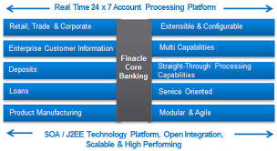

IFEANYICHUKWU SCHOLASTICA
IJEKEYE
 +2348037815379
+2348037815379
 schijek@gmail.com
schijek@gmail.comWORK EXPERIENCES
UNION BANK
Branch Services Manager
September, 2014 - CURRENT
My present working capacity entails all administrative supervisory duties regarding the branch operational activities, taking into cognizance the need to project the Bank’s brand in the operations service delivery while ensuring strict adherence to laid down operational procedures.
Special focus is given to ensuring exceptional customer service delivery is maintained at all times while providing support to relationship management of customers. I oversee the operations of the customer service, cash and teller/vault management and ATM supervisory management.In my capacity as the Branch Service Manager, I provide career guidance amd counselling to my team members in areas where great potential has been displayed in the staff.
This is aided by adequate recommendations to management for concerned staff to be vested with higher responsibilities or placements in departments where the observed potential is given the opportunity to be harnessed and realized.
Cost containment and management is also a key function of my job role and this is aimed at contributing to the effective management of the Bank’s resources while ensuring customer satisfaction is achieved at all times.
As a key member of the branch’s management, regular feedback to management on areas for improvement is also a core function.
FIDELITY BANK
Funds Transfer Officer
June 2009 - August 2014
I was engaged in banking operations through the Funds Transfer department and Ad hoc duties.
Facilitating transactions in adherence to laid down policies and guidelines,while ensuring that customer satisfaction was maintained. Through my duties I studied and reviewed with my team the key operation activities for the bank with the key objective of recommending positive changes for improvement.
This was a key activity which was of utmost interest to Executive management.
MERCHANDISING FRONTIERS LIMITED
Client Services Officer
August 2007 - March 2009
Pioneer member of the client service department.
Opened Credit account for Corporate clients
Handled market communications materials (input in design concepts)
Provided information on company products and services.Handled customer complaints and enquiries
Took part in quality assurance and evaluation of branding concepts before roll out to customer sites, while collating company profile and database for analysis
Prepared proforma and final invoices for clients and provided after sales service- checking for feedback on customer satisfaction
FORMAL EDUCATION
UNIVERSITY OF LIVERPOOL,UK
Msc,International Management
2012 - 2017
UNIVERSITY OF BENIN,NIG
B.A(Hons.),English & Literature
2001 - 2005
ONIKE GIRLS' HIGH SCHOOL,NIG
Senior Secondary School Certificate
1992 - 1998
SKILLS
Good team player, Detail oriented, Problem solving skills, Self motivated, Adaptable and flexible in learning, Good interpersonal and communication skills, Trouble shooting skills, Goal oriented and ability to work with little or no supervision.
Acquired Abilities
-
 Proficient in Microsoft Office
Proficient in Microsoft Office
-
Oracle HMS
-

Finacle Core